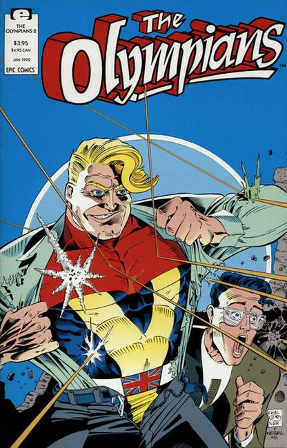

Issue #1
The emphasis is on laffs as some of the dumbest, most muscle-bound super heroes ever born rampage through London, with poor Max Tarrant, director of super heroes under the Ministry of Superheroics, caught in the fray. Written by Stephen Jewell, with art by Gary Chaloner and Gary Martin. Cover by Chaloner and Todd McFarlane.

Issue #2
Max Tarrant's wife becomes the newest sidekick hero, Rover, after she finds out about Max's affair with Athena. Meanwhile, the rest of London's heroes fight amongst themselves, leaving the city in shambles. Written by Stephen Jewell, with art and cover by Gary Chaloner.